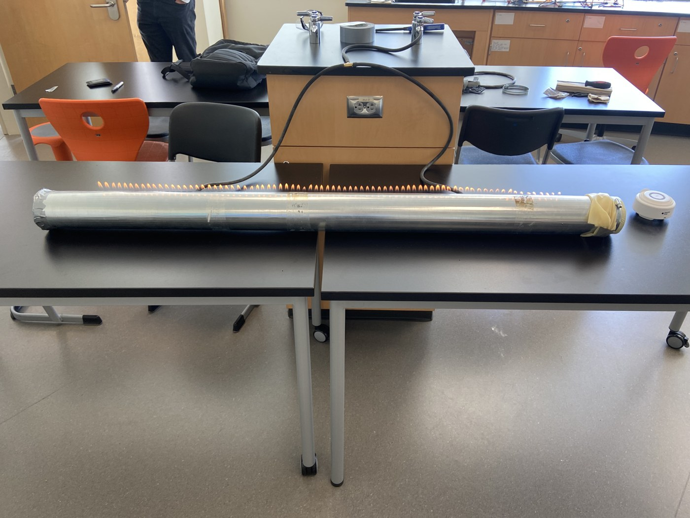
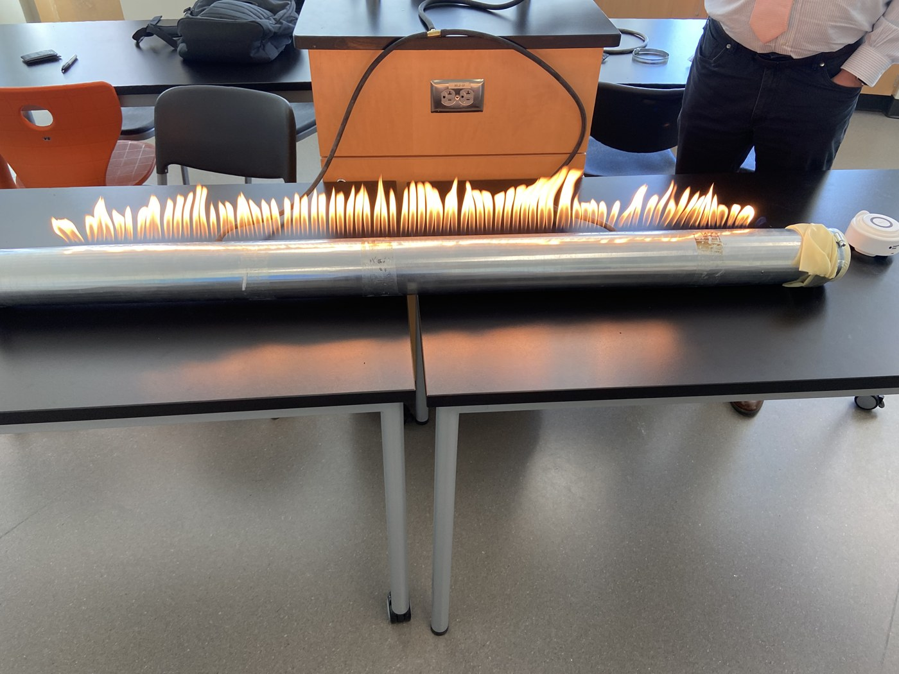
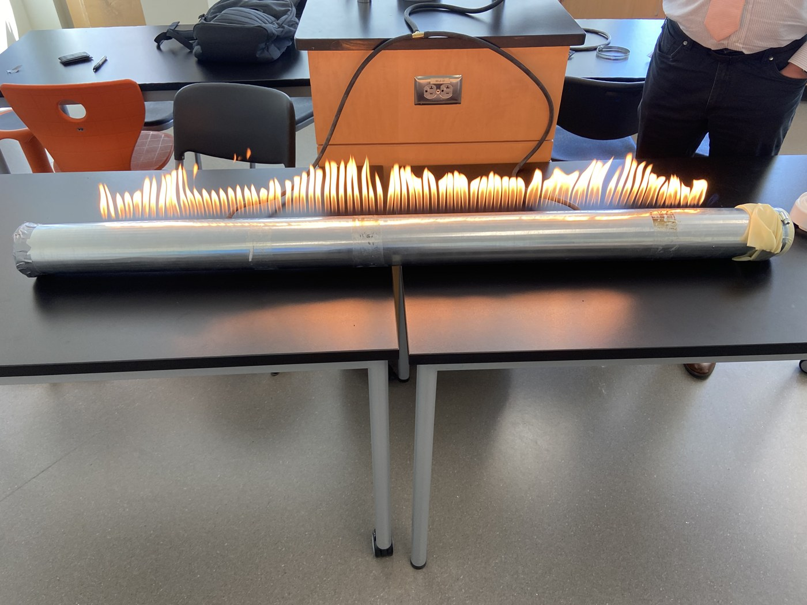

A Ruben's tube is a classic physics demo, and I picked it for my IB physics project because I thought the concept was amazing. It's a long metal pipe with a row of small holes along the top, filled with gas, with a flexible membrane and a speaker at one end. Play a tone into it and the sound sets up a standing wave inside the pipe, so the changing pressure makes the flames rise and fall, and you can literally see the shape of the sound in fire. I designed and built the whole thing from scratch: the body is a length of ventilation pipe that I drilled the holes into, and the speaker I borrowed from the PE department.
My first attempt caught fire, in the wrong way. I had used natural rubber for the membrane without realizing it was flammable, so it went up in flames instead of just vibrating. Swapping it for latex fixed the problem, and after that it ran. I was so happy when it finally worked, and I had way too much fun playing different songs through it and watching the flames dance. I could push it up to around the fifth or sixth harmonic before the pattern broke down.


